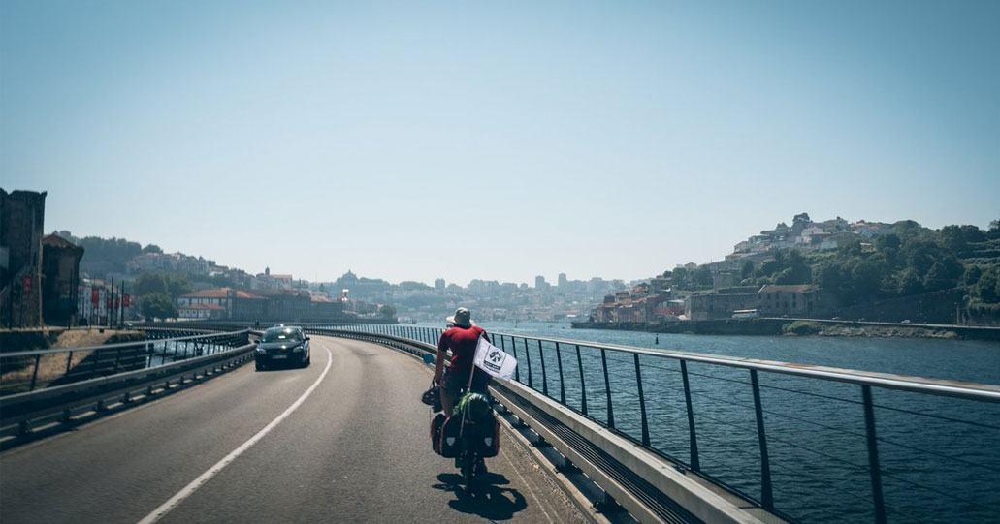
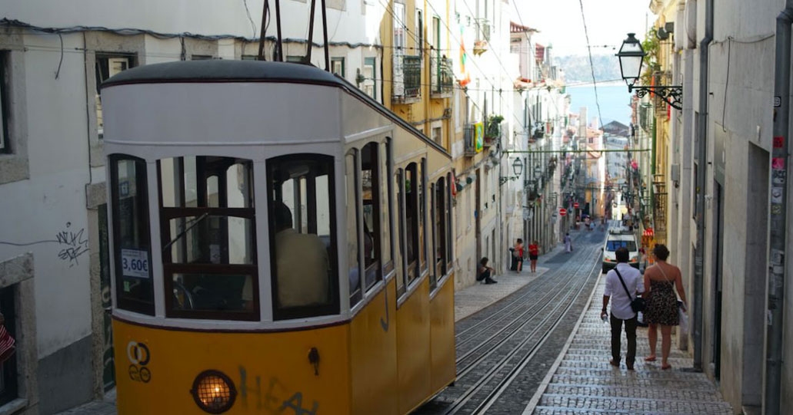
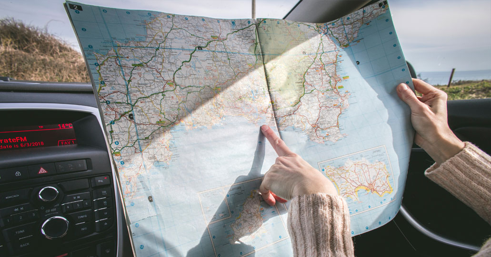
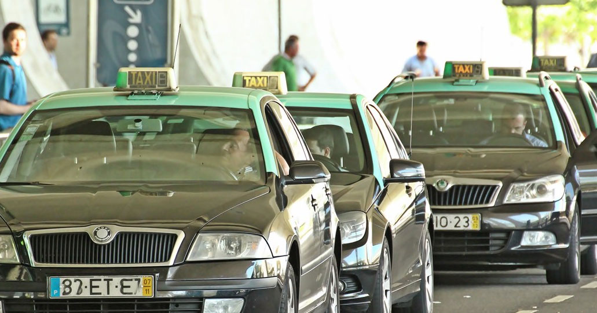

Déplacement
Plus d'infol'idéale est de louer une voiture
pour cela voici quelque conseil:
1°Politique du carburant : exigez « plein au départ – plein au retour »ils ne rembourse pas les litres que vous laisserez dans le vehicule
2° Louez une voiture en fonction de vos bessoin, (pas de smart si vous êtes 4 et que vousavez 3 bagages chacun)
3 °----------------ATTENTION TRES TRES IMPORTANT-------------------------
les cartes bleues sont appelées (à tord) cartes de crédit.
En fait ce sont presque toujours des cartes de débit.
Pour la plupart des loueurs cela ne pose pas de problème, mais dans certains cas extrèmes certains loueurs indélicats considèrent que le montant versé lors de la réservation n'est pas issu d'une carte de crédit, et annulent la réservation.
Il faut alors repayer une nouvelle réservation au prix du jour, évidement.
Quand au remboursement de la première réservation, certain l'attendent toujours......
Donc attention lorsqu'il est indiqué "carte de crédit" obligatoire!
voici un site qui vous permettra de choisir vos filtres ici
Choisissez votre moyen de transport à Porto : métro, tramway, bus, taxi, bateau etc...
Le système de transports publics de Porto et sa banlieue est très dense et plutôt bien organisé. Les moyens de transports sont assez complémentaires et sont capables de contenter les locaux et les touristes suivant leurs besoins. Il vous sera très facile de vous déplacer dans Porto et très simple d’accéder également à Vila Nova de Gaia où se trouvent les caves de Porto. Le plus important est d’identifier quels sont les transports qui s’adaptent le mieux à vos déplacements et identifier quel pass ou quelle carte de transport doit être en votre possession. Vous allez voir qu’il est par exemple possible de réserver un pass (la Porto Card) vous donnant accès aux métro et aux bus de Porto ainsi qu’aux principaux musées et monuments. Point important également, téléchargez ou procurez-vous les plans des transports que vous souhaitez utiliser (tous les liens nécessaires se trouvent dans cet article). A Porto, l’accès aux transports publics reste relativement bon marché comparé avec d’autres capitales européennes. Ainsi, n’essayez pas de frauder car si le prix d’un ticket reste abordable, les amendes peuvent être très salées.
Carte valable 1 jour : 6€ sans accès aux transports et 13€ avec accès aux transports
Carte valable 2 jours : 10€ sans accès aux transports et 20€ avec accès aux transports
Carte valable 3 jours : 13€ sans accès aux transports et 25€ avec accès aux transports
Carte valable 4 jours : 15€ sans accès aux transports et 33€ avec accès aux transports
VOTRE PORTO CARD ICI !
Pour les trajet en taxi
Le prix moyen d’un trajet dans la ville est généralement compris entre 4 et 6 euros tandis que le trajet depuis l’aéroport jusqu’au centre de Porto coûte aux alentours de 20 euros.
Si vous mettez des bagages dans le coffre, un supplément de 1,60€ sera appliqué.
En cas de doute, n’oubliez pas de consulter la liste des tarifs sur la vitre de la porte arrière gauche (celle s’y doit y être obligatoirement affichée). Veuillez noter qu’il est obligatoire de vous remettre une facture.
- 
- 
- 
- 